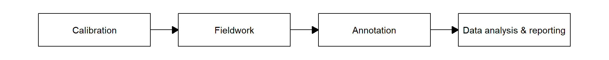
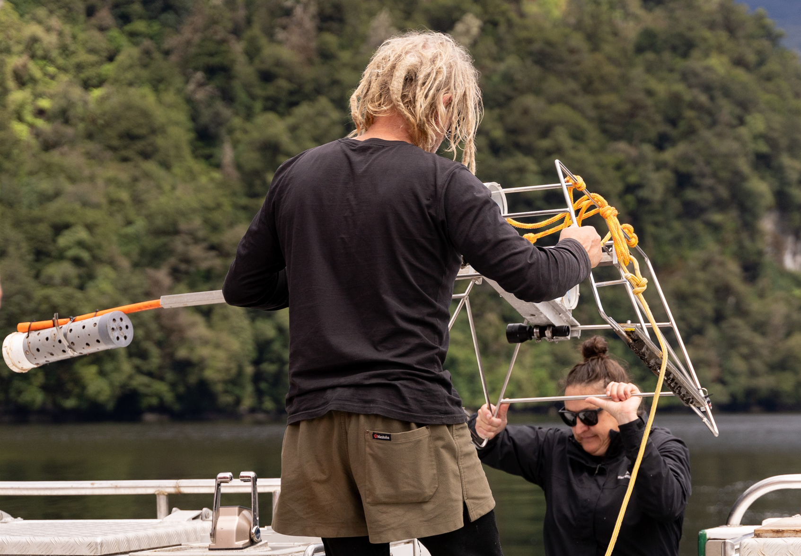
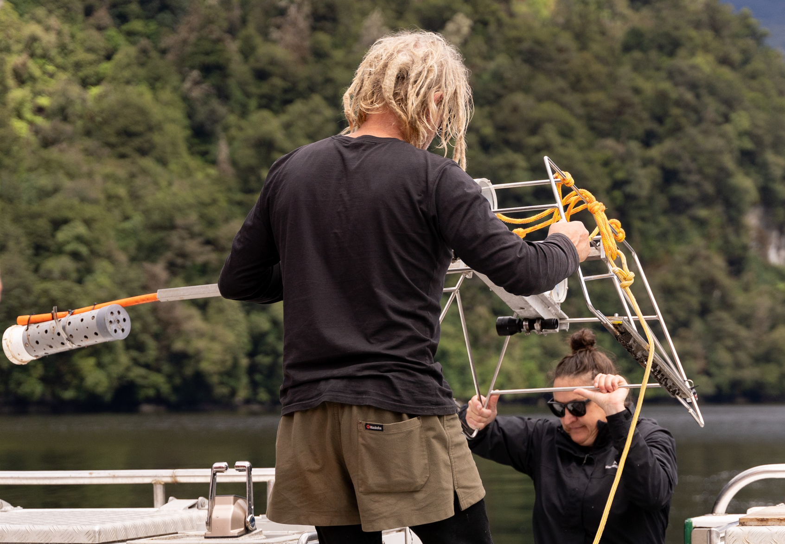
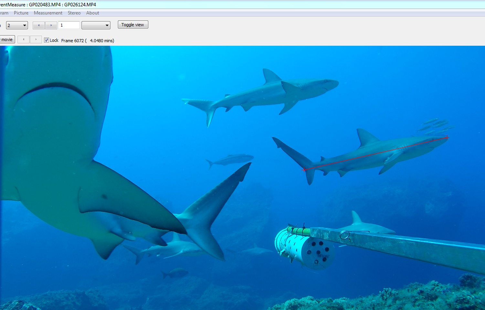
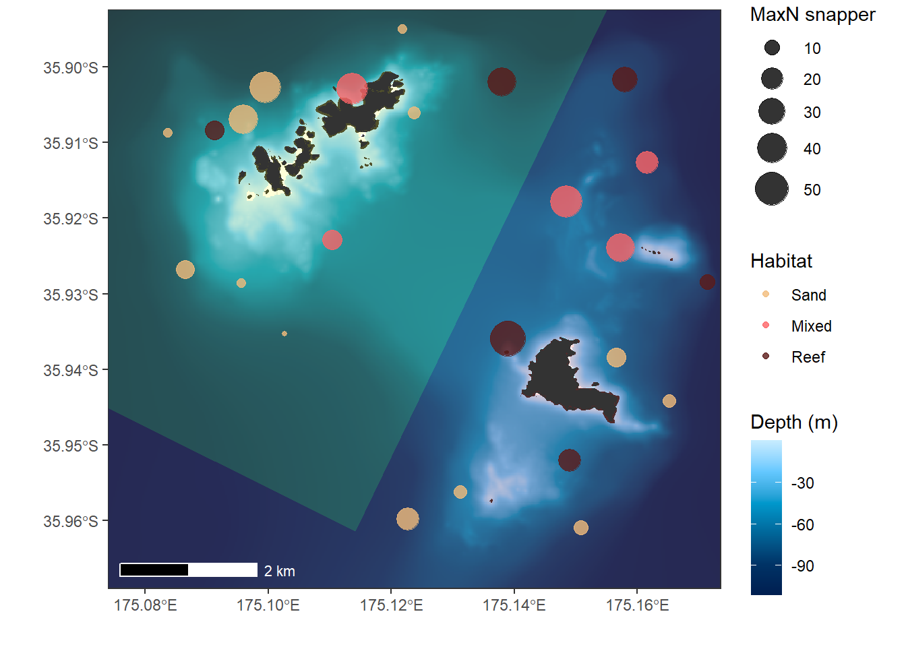

Survey Proposal
Rakaumangamanga Rāhui Tapu Marine Protected Area
What is a ‘Stereo BRUV’?
- Stereo Baited Remote Underwater Video
- Stainless steel frame with two video cameras pointing at a bait canister, with lights and a depth sensor
- Used around the world as a standard method of monitoring fishes

The BRUV process
 



Advantages of BRUVs
- Cost-effective
- Non-destructive, non-lethal
- Globally established methodology
- Standardised observation period (60 min)
- Broad depth range
- Captures a wealth of information on multiple species, size-classes, and habitats
- Permanent video archive

Survey proposal
15 sites
inside MPA
9 western
‘control’ sites
12 eastern
‘control’ sites